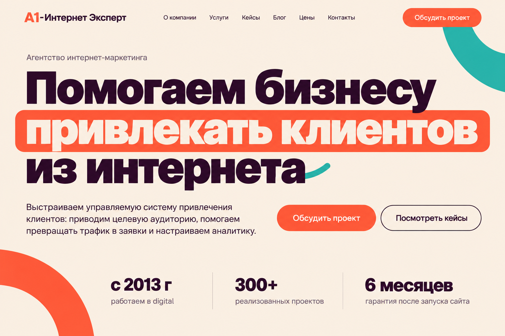

Вариант 04
Живая типографика
Крупный заголовок задаёт характер первого экрана. Коралловые и бирюзовые акценты выделяют ключевые слова на тёплом светлом фоне.
Идея анимации
Заголовок и цветовые элементы плавно меняют положение при прокрутке, сохраняя читаемость текста.